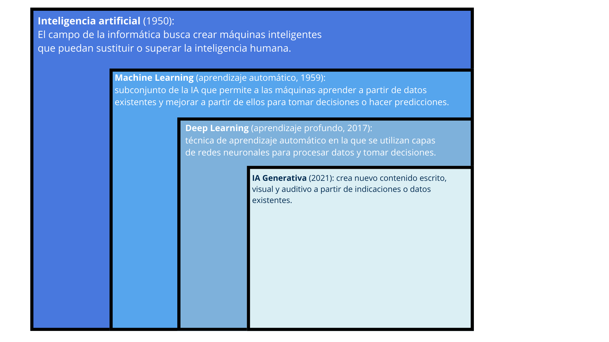
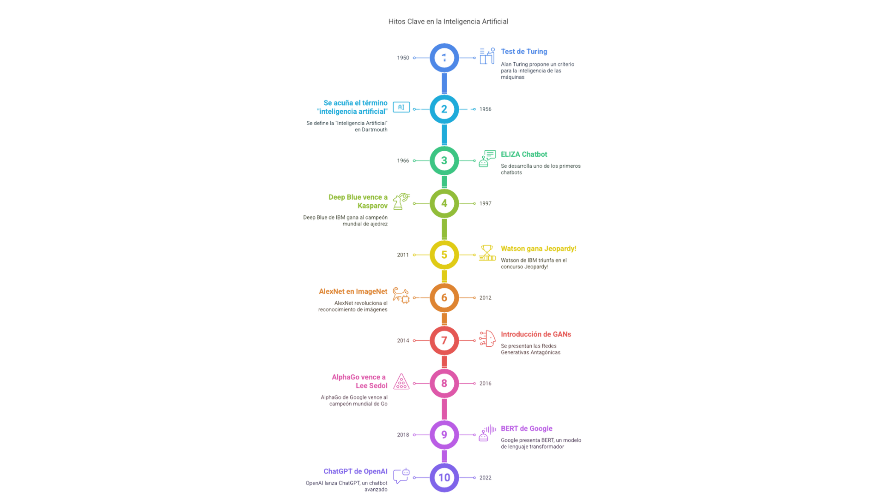

1.1. ¿Qué es la inteligencia artificial?
 Según la RAE, la inteligencia artificial (IA) es la «disciplina científica que se ocupa de crear programas informáticos que ejecutan operaciones comparables a las que realiza la mente humana, como el aprendizaje o el razonamiento lógico».
Según la RAE, la inteligencia artificial (IA) es la «disciplina científica que se ocupa de crear programas informáticos que ejecutan operaciones comparables a las que realiza la mente humana, como el aprendizaje o el razonamiento lógico».
La IA es un campo de la informática que se centra en la creación de sistemas capaces de realizar tareas que normalmente requieren inteligencia humana. Estos sistemas se diseñan para simular procesos cognitivos como el aprendizaje, el razonamiento, la resolución de problemas, la percepción, la comprensión del lenguaje natural y la toma de decisiones. En esencia, la IA busca desarrollar máquinas que puedan pensar, aprender y actuar de manera inteligente, aunque esta "inteligencia" se basa en algoritmos y modelos matemáticos complejos en lugar de la conciencia biológica humana.
El funcionamiento de la IA se fundamenta en el análisis de grandes cantidades de datos a través de algoritmos. Estos algoritmos permiten a los sistemas identificar patrones, extraer información relevante y aprender de la experiencia, mejorando su rendimiento con el tiempo sin necesidad de ser explícitamente programados para cada tarea específica. El aprendizaje automático (Machine Learning) y el aprendizaje profundo (Deep Learning) son subcampos clave de la IA que posibilitan esta capacidad de aprendizaje autónomo, utilizando redes neuronales artificiales inspiradas en la estructura del cerebro humano.
Las aplicaciones de la inteligencia artificial son vastísimas y se extienden a prácticamente todos los sectores de la sociedad. Desde asistentes virtuales y sistemas de recomendación en plataformas online hasta vehículos autónomos, diagnóstico médico avanzado, optimización de procesos industriales y herramientas de traducción automática, la IA está transformando la forma en que vivimos y trabajamos. Su capacidad para analizar datos complejos a gran velocidad y extraer conclusiones significativas la convierte en una herramienta poderosa para la innovación y la resolución de problemas en diversos ámbitos.
A pesar de su enorme potencial, la inteligencia artificial también plantea importantes desafíos éticos y sociales. Cuestiones relacionadas con la privacidad de los datos, el sesgo algorítmico, el impacto en el empleo y la responsabilidad en la toma de decisiones autónomas son objeto de debate y regulación. Es crucial abordar estos desafíos de manera proactiva para garantizar que el desarrollo y la implementación de la IA se realicen de forma responsable y en beneficio de toda la humanidad.
1.2. ¿Cómo surgió la inteligencia artificial?
 |
Los orígenes de la inteligencia artificial se remontan a mediados del siglo XX, tras la Segunda Guerra Mundial, cuando científicos y matemáticos comenzaron a explorar la posibilidad de crear máquinas pensantes. Figuras clave como Alan Turing, con su famoso test para evaluar la inteligencia de una máquina, y los pioneros de la cibernética, que estudiaban la comunicación y el control en seres vivos y máquinas, sentaron las bases conceptuales.
El término "inteligencia artificial" fue acuñado en 1956 durante la Conferencia de Dartmouth, un evento que marcó el inicio formal del campo como disciplina académica. Los primeros años se caracterizaron por un optimismo considerable y la creencia de que la IA general, capaz de realizar cualquier tarea intelectual humana, se alcanzaría en un futuro cercano.
Durante las décadas de 1960 y 1970, la investigación en IA se centró en el desarrollo de programas que podían resolver problemas lógicos, jugar al ajedrez y comprender un lenguaje natural limitado. Surgieron los primeros sistemas expertos, diseñados para emular el conocimiento de un experto humano en un dominio específico. Sin embargo, las expectativas iniciales se encontraron con la realidad de las limitaciones computacionales y la complejidad inherente al modelado de la inteligencia humana. Esto llevó a un período conocido como el "invierno de la IA", donde la financiación y el interés en la investigación disminuyeron significativamente.
Un resurgimiento de la IA se produjo en la década de 1980 con el auge de los sistemas expertos basados en reglas y el desarrollo del aprendizaje automático, aunque con enfoques más simbólicos. Sin embargo, fue en las últimas décadas, impulsado por el aumento exponencial de la potencia computacional, la disponibilidad de grandes conjuntos de datos y los avances en algoritmos como las redes neuronales profundas, que la IA experimentó un crecimiento y una adopción sin precedentes.
Hoy en día, la IA es una disciplina vibrante y en constante evolución, con un impacto significativo en numerosos aspectos de nuestra vida.
Un resumen gráfico del proceso de evolución de la IA es este:

1.3. Hitos clave en la evolución de la inteligencia artificial.

Para ampliar...

Si quieres saber un poco más sobre la historia y la evolución de la inteligencia artificial, puedes visitar la web de IBM. En ella encontrarás un resumen detallado de los momentos clave desde sus orígenes hasta la actualidad. ¡Interesantísimo! Te recomiendo que le eches un vistazo para ampliar tus conocimientos...